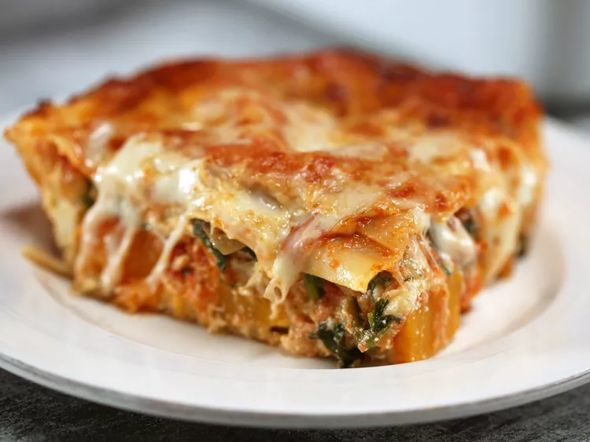
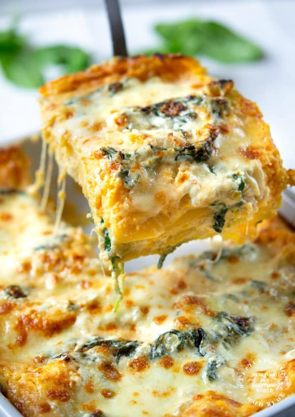

Roasted Butternut Squash and Spinach Lasagna
Talk about the perfect fall dinner– this roasted butternut squash and spinach lasagna certainly must be it.
By Nicole McLaughlin Published on September 5, 2023

Ingredients
6 cups cubed butternut squash (from 1 large butternut squash)
4 teaspoons olive oil, divided
1 1/2 teaspoons kosher salt, divided
